输入数值：单元格属性
拖动
拖动 + 微调：按住 Alt
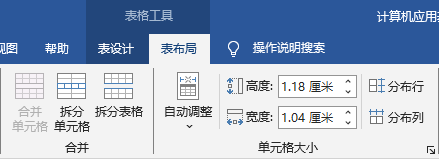
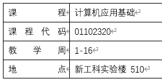
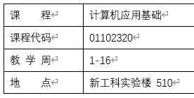
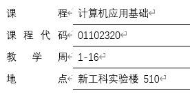
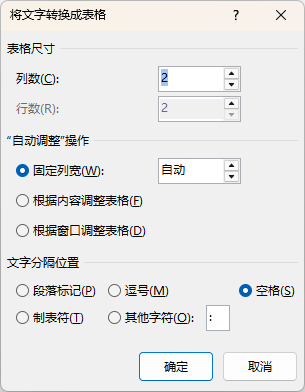
CTRL + SHIFT + Enter：分割表格；也可用于在表格前面插入新行
旧版本格式实现略有差别；如果格式无法按照需求调整，请新建文档并复制内容过去
| sn | name | age |
|---|---|---|
| 1 | gl | 20 |
| 2 | cq | 22 |
| 3 | sz | 23 |
| 4 | sh | 30 |
| 5 | nj | 32 |
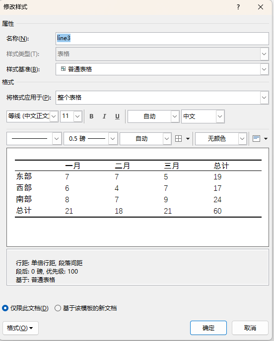
| item | desc |
|---|---|
| MIN() | 最小值 |
| MAX() | 最大值 |
| SUM() | 求和 |
| AVERAGE() | 求平均 |
四周
紧密环绕
穿越
上下
文字上方
文字下方
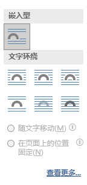
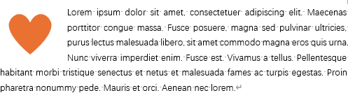
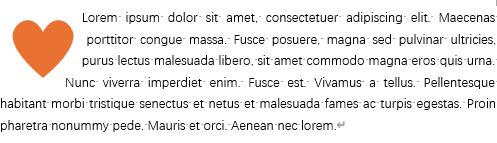
页面
页边距
注意段落行距对图片的影响
可以且推荐使用表格
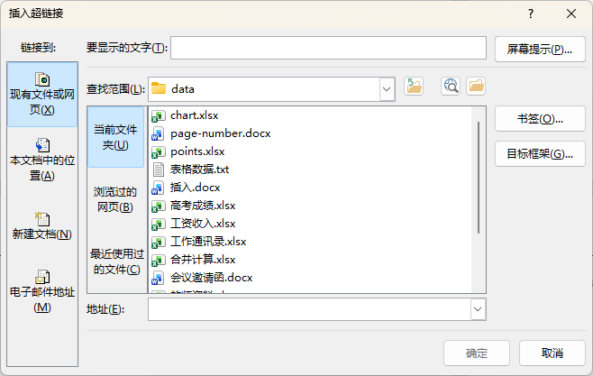
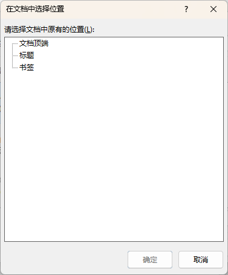
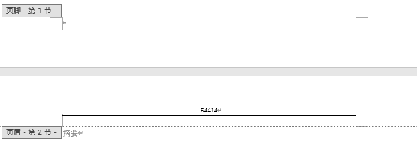
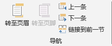
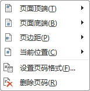
在页眉或页脚存在的前体下，不能直接插入页码，否则会覆盖页眉或页脚
如果仅仅需要页码，可以直接插入页码
否则应该先插入页眉或页脚，再指定位置插入页码
最佳实践：先插入空白栏的页眉或页脚；再将光标定位在页眉或页脚某个位置/占位符；最后选择"当前位置"插入页码
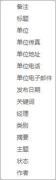
| 操作 | 示例 | |
|---|---|---|
| 分数形式 | a/b | 上下分数形式 |
| 上标 | a^2 | a2 |
| 下标 | a_2 | a2 |
| 三角函数 | sin | sin x |
| 乘 | \times | × |
| 除 | \div | ÷ |
| 平方根 | \sqrt | 输完数字后，再按空格会延长根号 |
| 说明：()在快速输入中，用来对数据分块，并不是括号 | ||
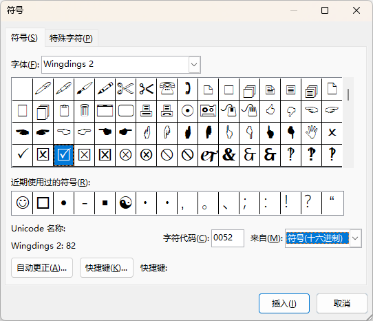
先输入对应的 Unicode 编码
选择编码
按 Alt + X
| Unicode | Symbol |
|---|---|
| 25bc | ▼ |